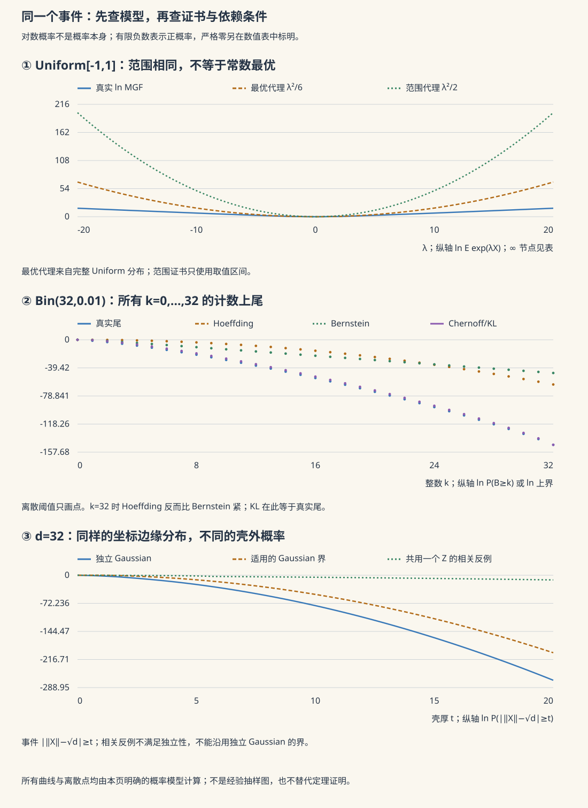

本页目录
高维概率 I · 亚高斯分布与集中不等式
对标：Vershynin HDP §2.1–2.8 ｜ 前置：mt-01/02/04、本科概率 V 高维概率的第一性原理：独立随机量的和以指数速率集中于均值。本页把本科的 Chebyshev（多项式尾）升级为 Chernoff 系（指数尾），并引入组织这一切的现代语言——亚高斯/亚指数范数。这是理解"为什么高维统计和机器学习在有限样本下就能工作"的数学地基。
学习层：同一个尾界，究竟凭什么成立？
1. 从一个居中的随机量开始
把均值先拿掉：\(X_c=X-EX\)。亚高斯的 MGF 证书是存在 \(K<\infty\)，使对所有 \(\lambda\in\mathbb R\)，
对 \(\lambda>0\) 用 Markov，
优化 \(\lambda=t/K^2\)，再对 \(-X_c\) 做同样的事，得到
这里有三层不同强度的陈述：MGF 是对所有 \(\lambda\) 的函数不等式，尾界是由它推出的定理，图表里的某个 \(t\) 只是一个数值读数。把最后一层倒过来当成第一层，是集中实验最容易犯的量词错误。
2. 先预测：常数、重尾与多事件账本
揭示实验前先回答三个问题：
- 单位尺度下，标准 Gaussian 与 Rademacher \(\{\!-1,+1\!\}\) 都可用 \(K=1\) 的 MGF 证书；它们在有限 \(t\) 上的真实尾概率是否必须相同？
- 对称 Pareto 型重尾即使有均值、甚至有有限方差，能否仍满足“对所有 \(\lambda\) 的 Gaussian 型 MGF 上界”？
- 若每个事件的失败概率上界为 \(p\)，要同时控制 \(m\) 个事件，union bound 会把账本写成 \(p\)、\(mp\)，还是 \(p^m\)？当 \(mp>1\) 时应如何读这个证书？
实验先收下预测，再让四类模型共享同一张 MGF/尾界图：Gaussian、Rademacher、\([-1,1]\) 上的有界均匀量，以及尾部 \((1+t)^{-3}\) 的对称重尾量。有限曲线比较的是给定模型的解析值和上界；它不替代“对所有 \(\lambda\)”或“对所有 \(t\)”的定理假设。
3. 四类模型与常数的来源
| 模型（均已居中） | MGF / 尾部事实 | 可用的 \(K\) 或结论 | 关键边界 |
|---|---|---|---|
| \(G\sim N(0,1)\) | \(Ee^{\lambda G}=e^{\lambda^2/2}\) | \(K=1\)，MGF 证书精确 | 真尾部还含 Gaussian 的多项式因子，Chernoff 只比较指数尺度 |
| \(R\in\{\!-1,+1\}\) | \(Ee^{\lambda R}=\cosh\lambda\le e^{\lambda^2/2}\) | \(K=1\) | 离散尾在 \(t>1\) 直接为 0，MGF 上界仍只是统一上界 |
| \(U\sim\mathrm{Unif}[-1,1]\) | \(Ee^{\lambda U}=\sinh\lambda/\lambda\) | Hoeffding 引理给 \(K=1\) | \(K=1\) 是范围证书，不是方差 \(1/3\) 的最优常数 |
| 对称重尾 \(P(\lvert H\rvert\ge t)=(1+t)^{-3}\) | \(\lambda\ne0\) 时 MGF 发散 | 无有限亚高斯 \(K\) | 有有限二阶矩不等于有指数矩；只能用多项式尾工具 |
对独立 \(X_i\)，MGF 才能相乘：若每个 \(X_i\) 居中且有参数 \(K_i\)，则
若 \(X_i\in[a_i,b_i]\) 且独立，Hoeffding 引理给 \(K_i=(b_i-a_i)/2\) 的一个范围级证书，于是
4. 动手：先锁定 MGF，再做 union-bound 乘法
实验默认 Rademacher、\(n=32\)、和的阈值 \(t=12\)、同时要保护 \(m=5\) 个事件。揭示后可以切换分布、\(n\)、\(t\) 与 \(m\)，但每个数字都保留三种标签：解析模型值、单个事件的定理上界、union bound 后的同时失败上界。这样不会把“抽到一批样本看起来很集中”误写成“概率已经被证明很小”。
JavaScript 失效时的静态 fallback：固定居中 Rademacher、\(K=1\)、\(n=32\)、\(t=12\)、\(m=5\)。独立和的亚高斯证书为
这里的 \(1\) 是 union bound 的截断上界，不是说失败必然发生。单变量 \(t=1.5\) 的解析读数可用来对账：
| 模型 | \(K\) 证书 | \(P(|X|\ge1.5)\) 的模型值 | \(2e^{-1.5^2/(2K^2)}\) | 证书层级 | |---|---:|---:|---:|---| | Gaussian \(N(0,1)\) | \(1\) | 约 \(0.1336\) | 约 \(0.6493\) | MGF/尾定理 | | Rademacher | \(1\) | \(0\) | 约 \(0.6493\) | MGF/尾定理 | | Uniform \([-1,1]\) | \(1\)（范围级） | \(0\) | 约 \(0.6493\) | Hoeffding 引理 | | 对称重尾 | 不存在有限 \(K\) | \((1+1.5)^{-3}=0.064\) | 不适用 | 多项式尾模型 |
模型值是该解析分布在一个阈值上的读数；尾界需要居中和 MGF 假设；和的公式还需要独立性。union bound 本身不需要事件独立，但只会把单事件上界相加，不能凭“事件很多”改写成乘法独立模型。
5. 定理级结论与失败边界
- 定理级：居中、全 \(\lambda\) 的 MGF 上界推出 Gaussian 型尾；独立性把 MGF 的指数相加；对 \(m\) 个事件，\(\Pr(\cup_jE_j)\le\sum_j\Pr(E_j)\)，这一步不要求事件独立。
- 有限证据：图只画有限的 \(\lambda,t\) 网格，表只显示选定参数；重尾在有限窗口里也可能“看起来很像”亚高斯，不能据此补上不存在的指数矩。
- 常数纪律：\(K\) 是 MGF 的代理尺度，不自动等于标准差；Hoeffding 的 \(K=(b-a)/2\) 是范围级安全常数，Bernstein 或方差感知界可能更紧。
- 失败边界：未居中时应先减均值；变量相关时不能直接把 MGF 拆成乘积；\(m\) 很大时 union bound 可能松到 1；重尾模型应改用多项式尾、截断或稳健估计，而不是强行套亚高斯结论。
1. Chernoff 方法：一个模板统治所有
模板【证明】：对任意 \(\theta > 0\)，
独立和的矩母函数乘积分解 \(Ee^{\theta S_n} = \prod Ee^{\theta X_i}\)——指数把"独立"变成"可乘"，Markov 把"可乘"变成"指数尾"。mt-04 Azuma 的三步在此提纯为通用模板；一切集中不等式都是"给 \(Ee^{\theta X}\) 找上界"的手艺差异。
定理（Hoeffding） \(X_i\) 独立、\(X_i \in [a_i, b_i]\)：
【骨架】 Hoeffding 引理（有界零均值 ⇒ \(Ee^{\theta X} \leq e^{\theta^2(b-a)^2/8}\)：对 \(\ln Ee^{\theta X}\) 二阶 Taylor + 方差上界 \(\frac{(b-a)^2}{4}\)）代入模板。\(\blacksquare\)（ai 课 01 讲泛化界里那个 Hoeffding 的正身。）
定理（Bernstein） 独立零均值、\(|X_i| \leq M\)、\(\sigma^2 = \sum EX_i^2\)：
读法（两段尾巴）：\(t\) 小（\(t \lesssim \sigma^2/M\)）时是高斯尾 \(e^{-t^2/2\sigma^2}\)——用真实方差而非最坏区间宽（方差小时比 Hoeffding 强得多）；\(t\) 大时退化为指数尾 \(e^{-3t/2M}\)——单个有界变量的极限速度。"小偏差像高斯、大偏差像指数"是本课程反复出现的地貌。
2. 亚高斯分布：组织语言

定义 \(X\) 亚高斯：尾部 \(P(|X| \geq t) \leq 2e^{-t^2/K^2}\)。这里的尾参数与学习层 MGF 约定中的 \(K\) 可相差绝对常数；亚高斯理论通常只在常数因子意义下比较这些等价刻画。矩增长 \(\|X\|_{L^p} \leq CK\sqrt{p}\)；矩母函数 \(Ee^{X^2/K'^2} \leq 2\)。由最后者定义亚高斯范数 \(\|X\|_{\psi_2}\)（Orlicz 范数，是真范数）。
成员：有界变量在中心化后（Hoeffding 引理）、中心高斯、Rademacher。性质：独立且中心化的亚高斯变量满足 \(\|\sum X_i\|_{\psi_2}^2 \leq C\sum\|X_i\|_{\psi_2}^2\)（"方差式相加"）。若不中心化，确定性均值还要单独记账，不能把和直接套进关于 0 的尾界。
亚指数：尾 \(e^{-t/K}\) 级（\(\|\cdot\|_{\psi_1}\)）。关键事实：亚高斯的平方是亚指数（\(\|X^2\|_{\psi_1} = \|X\|_{\psi_2}^2\)，代定义即得）——范数、二次型这类"平方量"天然生活在亚指数世界，这就是 Bernstein 型双段尾巴无处不在的原因。
定理（Bernstein，亚指数版）【引用】 独立零均值亚指数和：\(P(|\sum X_i| \geq t) \leq 2\exp\big(-c\min\big(\frac{t^2}{\sum K_i^2}, \frac{t}{\max K_i}\big)\big)\)。
3. 第一个高维定理：范数集中
定理 \(X \in \mathbb{R}^n\) 各分量独立、零均值、单位方差、\(\|X_i\|_{\psi_2} \leq K\)：
即 \(\|X\|_2 = \sqrt n \pm O(1)\)，且偏差呈亚高斯尾。 【骨架】 \(\|X\|_2^2 - n = \sum(X_i^2 - 1)\) 是独立零均值亚指数和 ⇒ Bernstein 给 \(\|X\|_2^2\) 集中于 \(n\)（宽度 \(\sqrt n\) 级）；开方的 Lipschitz 处理（\(|\sqrt a - \sqrt b| \leq |a-b|/\sqrt b\)）把它翻译回 \(\|X\|_2\) 集中于 \(\sqrt n\)（宽度 \(O(1)\)）。\(\blacksquare\)
读法（高维几何的第一堂震撼课）：\(n\) 维标准高斯向量几乎全部生活在半径 \(\sqrt n\)、厚度 \(O(1)\) 的薄球壳上——"钟形曲线"的直觉在高维完全失灵（原点附近密度最高却几乎没有质量：密度×体积的博弈，体积赢了）。推论级事实：两个独立高维高斯向量几乎正交（\(\frac{\langle X,Y\rangle}{\|X\|\|Y\|} \approx O(n^{-1/2})\)）。🔗 这些反直觉正是 ai 课"高维针尖流形"、embedding 空间"随机向量近正交所以能塞下海量概念"的定量出处。
4. 练习与要点
例 1（模板亲算） 标准正态：\(Ee^{\theta X} = e^{\theta^2/2}\)，模板优化 \(\theta = t\) 给 \(P(X \geq t) \leq e^{-t^2/2}\)——与真尾部只差多项式因子：Chernoff 在指数尺度上是紧的（大偏差理论的起点，it2-03 再会）。
例 2（Hoeffding 的样本量语言） i.i.d. 有界 \([0,1]\)，要 \(P(|\bar X - \mu| > \varepsilon) \leq \delta\)：\(n \geq \frac{\ln(2/\delta)}{2\varepsilon^2}\)——精度的平方反比 × 置信度的对数：\(\delta\) 从 5% 压到 0.1% 只多付 \(\ln\) 倍样本。"对数便宜、平方贵"是一切样本量设计的口诀（slt 线 PAC 界的原型）。
例 3（方差感知的价值） 稀有事件计数（\(p = 0.01\)，\(n\) 次试验）：Hoeffding 宽度 \(\sim\sqrt n\) 完全无视稀有性；Bernstein 用 \(\sigma^2 = np(1-p) \approx 0.01n\) 给出 \(\sim\sqrt{0.01 n}\)——紧 10 倍。凡是"方差远小于范围"的场景（稀疏数据、罕见错误率）永远选 Bernstein。\(\blacksquare\)
下一页：从单个和到随机向量——协方差估计需要多少样本、Johnson–Lindenstrauss 降维引理（全证）。